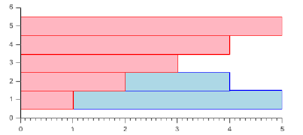
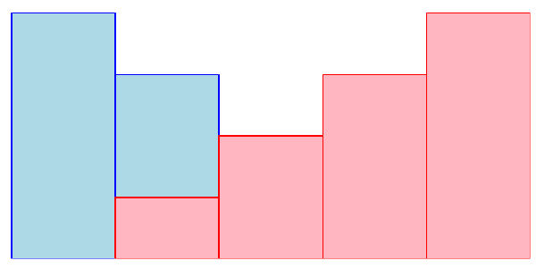
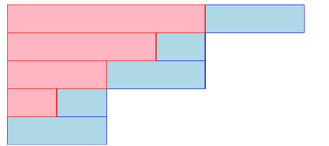
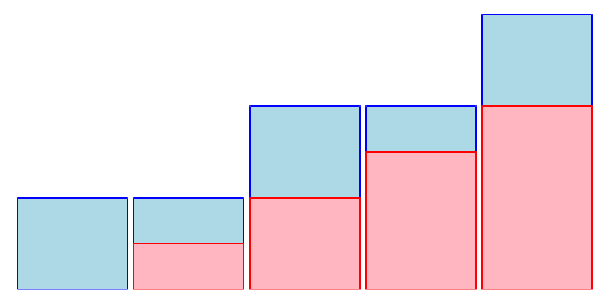
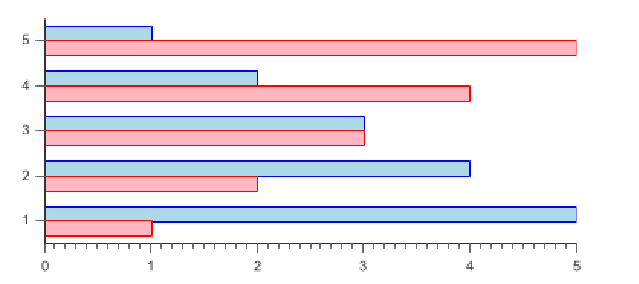
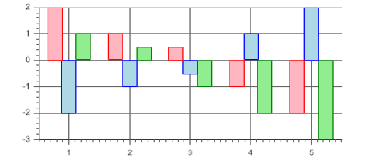
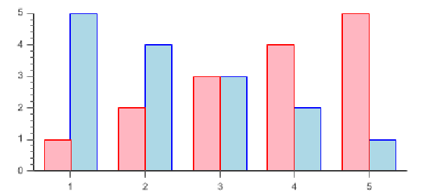

4.3.3 BarPlot
This class is used to draw several types of Bar and Columbs plots
4.3.3.1 What type of data to use?
This type of plot can be used with series of anything wich extends Number. The y
coordinate is the number, where the x coordinate is the data’s position in the
Serie.
4.3.3.2 Subtypes
. The plot type is determined with the constructor:
public BarPlot(String type) ;
Where type is one of the following constants :
-
BarPlot.PLOT_TYPE_BARS:
- Series are drawn in horizontal bars. Ex:
-

-
-
BarPlot.PLOT_TYPE_COLUMNS:
- Series are drawn in vertical bars.
Ex:
-

-
-
BarPlot.PLOT_TYPE_BARS_STACKED:
- Series are drawn in stacked
horizontal bars, adding the bars values from one serie to the next. Ex:
-

-
-
BarPlot.PLOT_TYPE_COLUMNS_STACKED
- Same as
BARS_STACKED, but with vertical bars. Ex:
-

-
-
BarPlot.PLOT_TYPE_BARS_CLUSTERED:
- Bars which do not
overlap. Ex:
-

-
-
BarPlot.PLOT_TYPE_COLUMNS_CLUSTERED:
- Columns which
do not overlap. Ex:
-

-
4.3.3.3 Specific options
/** * @param gap : sets the gap between two bars */ public void setGap(
int gap);
ex: Clustered Columns with gap = 10 :
Chart2D chart =
new Chart2D("400px", "200px");
BarPlot plot =
new BarPlot(BarPlot.PLOT_TYPE_COLUMNS_CLUSTERED);
plot.setGap(10);
chart.addPlot(plot);
